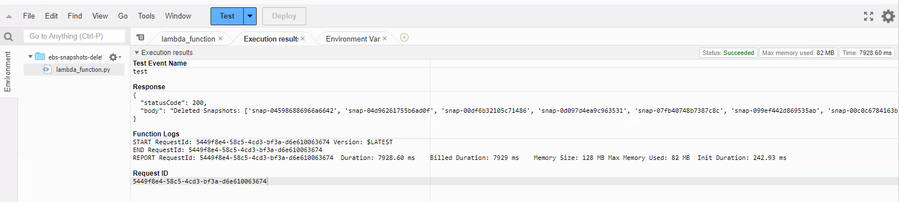
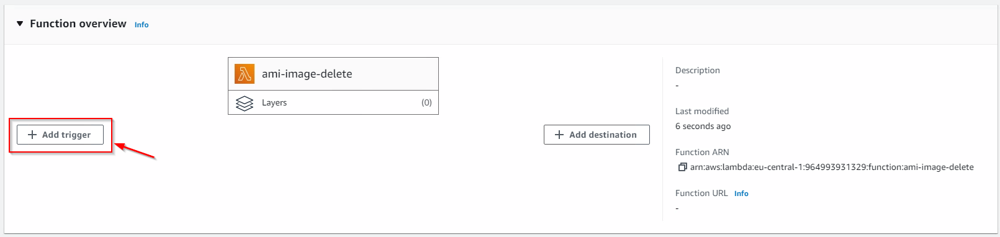

Using AWS Lambda to automate AMI & Snapshots deletion
Scenario
Amazon Machine Images are a great way to back up your AWS EC2 instances, for example before patching.
However, there is no easy way to delete the Images afterwards. Each AMI has underlying Elastic Block Store (EBS) Snapshots attached to it, often many, which to delete require you to deregister the AMI and then find each Snapshot to then remove, via the AWS GUI. This can be time consuming and frustrating, and almost impossible if you’re taking AMIs of many servers, for example before a patch cycle of hundreds of servers.
Fortunately there’s an easy way to automate the deregistering of specific AMIs, as well as the deletion of underlying, related Snapshots, via a Python Lambda function.
In this scenario, we’re going to assume that the images are all within the same AWS account and that we’ve applied a tag to them, with the format Key=Purpose and Value=Patching, which is easy to do at the time of taking the AMI.
It is possible to use other critera for filtering, such as the age of the AMI, the title, etc., simply amend the Python code below to suit your needs.
Note : AWS Lambda functions are Region specific, so if you wish to clear down snapshots on the same account, from more than one Region, you will need to follow the steps below (for the Function creation and Cloudwatch Trigger) each Region you take AMIs in.
Steps
Create an IAM Policy
- Use the search bar within the AWS GUI to search for IAM and navigate to it
- On the left menu, select Policies
- On the right side, click Create Policy
- On the page that loads, Specify Permissions, select the JSON view in the top right
- Paste in the following;
{
"Version": "2012-10-17",
"Statement": [
{
"Sid": "VisualEditor0",
"Effect": "Allow",
"Action": [
"ec2:DescribeImages",
"ec2:DeregisterImage",
"ec2:DescribeInstances",
"ec2:DeleteSnapshot"
],
"Resource": "*"
}
]
}
- Click Next
- Name the policy, in this scenario I am using ami-image-policy
- Fill in a Description and Tag(s), if you would like (optional)
- Click Create policy
Create an IAM Role
- Still within IAM, on the left menu, select Roles
- On the right side, click Create role
- Select the Trusted entity type as AWS Service
- Select the Use case and Lambda
- Click Next
- On the Permissions policies page, find and tick the Policy we created above, ami-image-policy
- Click Next
- Give your Role a name, in this case I used ami-image-role
- Click Create role
Create a Python Lambda Function
- Use the search bar within the AWS GUI to search for Lambda and navigate to it
- On the left menu, select Functions
- On the right side, click Create Function
- Select;
- Author from scratch
- Choose a Function name (in this scenario I’m going to use ami-image-delete)
- Select the Runtime as Python (in this scenario Python 3.10)
- Drop down Change default execution role, select Use an existing role and then select the role we created earlier; ami-image-role
- Leave everything else as default and select Create function
- Under Code source, in the lambda_function tab, enter the code below. I’ve included some annotation throughout;
# Script Purpose: Delete patching related AMIs via tag Purpose=Patching
import boto3
def lambda_handler(event, context):
ec2_client = boto3.client('ec2')
# Create empty Lists for later population
deregistered_images = []
deleted_snapshots = []
# Filter out AMIs with the tag Purpose=Patching
response = ec2_client.describe_images(Filters=[
{'Name': 'tag-key', 'Values': ['Purpose']},
{'Name': 'tag-value', 'Values': ['Patching']}
])
if 'Images' in response:
images = response['Images']
# Add Image ID to List and Deregister AMIs
for image in images:
image_id = image['ImageId']
deregistered_images.append(image_id)
ec2_client.deregister_image(ImageId=image_id)
# For each image, get underlying Snapshots, add them to List and delete them
block_device_mappings = image.get('BlockDeviceMappings', [])
for mapping in block_device_mappings:
if 'Ebs' in mapping and 'SnapshotId' in mapping['Ebs']:
snapshot_id = mapping['Ebs']['SnapshotId']
deleted_snapshots.append(snapshot_id)
ec2_client.delete_snapshot(SnapshotId=snapshot_id)
output_message = "Deregistered AMIs: {} Deleted Snapshots: {}".format(deregistered_images, deleted_snapshots)
else:
output_message = "No AMIs found to delete."
return {
'statusCode': 200,
'body': output_message
}
- Deploy the code
- We don’t want the task to time out after a moment (the default is 3 seconds), as it may take longer to run, so now go to the Configuration tab and click Edit
- Set the Timeout to something sensible, based on how many Images you expect to be deleting in any one go. I would allocate at least a few seconds per Image. In my case, I set the timeout at 3 minutes.
- (Optional) Take some EC2 AMI Images of servers on your AWS account
- Back on the Code tab, click Test on the Lambda Function.
- If you are running the Function for the first time, you will get a window pop-up to Configure test event. Just give the event a name, anything will do, and click Save, then Test again.
- If you get an error stating “Task timed out after X seconds”, revisit steps 7 and 8 above.
If it was successful, you should see an output like the following;

Create a Cloudwatch Trigger
Now we have a working script that deregisters AMIs and deletes underlying snapshots, we need to create a CloudWatch trigger so that it runs automatically on a regular basis.
For this example, we’re going to run the Function every Monday at 6pm.
- Still within the Function overview within Lambda, click Add trigger;

- Select EventBridge (CloudWatch Events) from the drop down
- Under Rule, select Create a new rule
- Name the rule whatever you like, for this scenario I used the same name as the function, ami-image-delete
- Under Rule Type, select Schedule expression
- I prefer cron for the expressions, so this covers every Monday at 6pm;
cron(00 18 ? * MON *)
Note that, by default, the time given is for UTC.
- Click Add